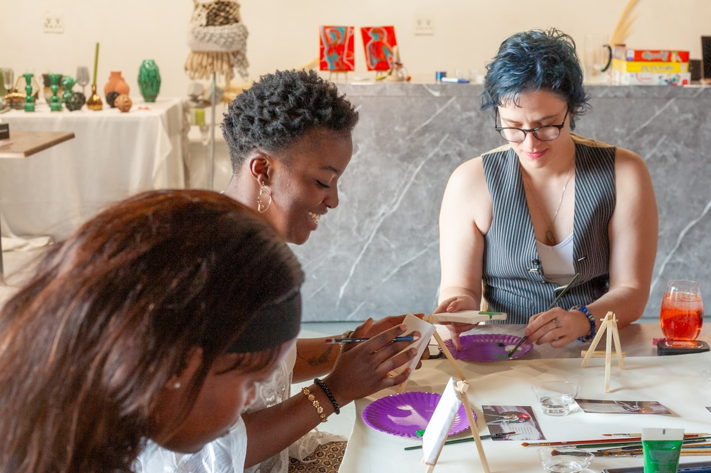

혼자 있는 시간이 많아진 요즘, 진짜 의미 있는 모임을 찾는 사람들이 늘고 있어요. 소셜그로브는 그런 사람들을 위한 모임입니다.
우리는 단순히 얼굴을 마주하는 게 아니라, 함께 손으로 무언가를 만들며 이야기를 나누고, 취향을 공유하고, 작은 성취감을 함께 느낍니다.
하나는 내가 가져가고, 하나는 우리 마음을 담아 기부해요. (선택)
소셜그로브는 작은 모임(그로브)들이 모여 서로를 연결하고, 결국 긍정적인 변화(숲)를 만들어가는 의미 있는 참여형 모임 플랫폼입니다.

Why Social Grove
'그냥 모임'과 다른, 우리가 일하는 방식이에요.
수십 명이 스쳐 지나가는 모임이 아니라, 소수의 사람과 제대로 가까워지는 나노 커뮤니티를 지향해요.
대화만 하다 끝나지 않아요. 함께 무언가를 만들며 자연스럽게 친해지고, 손에 남는 결과물까지 가져갑니다.
모임 수익의 일부는 늘 기부로 이어져요. 내 취미가 누군가에게는 따뜻한 변화가 되는 구조입니다.
How it works
관심 가는 모임(그로브)을 골라 가볍게 신청해요.
소수의 멤버와 손으로 무언가를 만들며 이야기를 나눠요.
결과물 하나는 내가, 하나는 마음을 담아 기부해요. (선택)
작은 그로브들이 모여 더 큰 연결과 변화로 이어집니다.